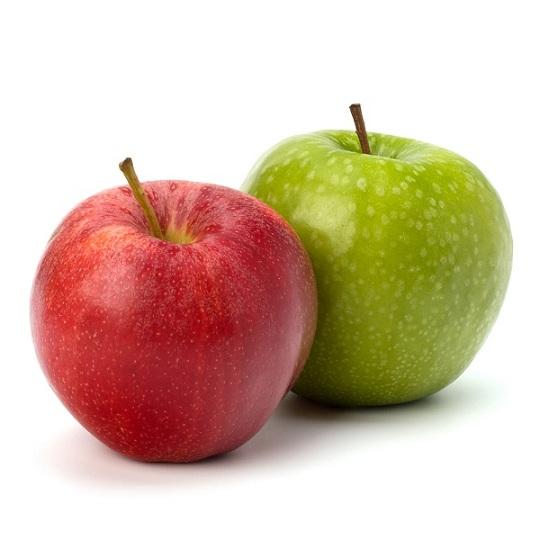

The apple is the pomaceous fruit of the apple tree, species Malus domestica in the rose family Rosaceae. It is one of the most widely cultivated tree fruits, and the most widely known of the many members of genus Malus that are used by humans. Apples grow on small, deciduous trees. The tree originated in Central Asia, where its wild ancestor, Malus sieversii, is still found today. Apples have been grown for thousands of years in Asia and Europe, and were brought to North America by European colonists. Apples have been present in the mythology and religions of many cultures, including Norse, Greek and Christian traditions. In 2010, the fruit's genome was decoded, leading to new understandings of disease control and selective breeding in apple production. There are more than 7,500 known cultivars of apples, resulting in a range of desired characteristics. Different cultivars are bred for various tastes and uses, including cooking, fresh eating and cider production. Domestic apples are generally propagated by grafting, although wild apples grow readily from seed.